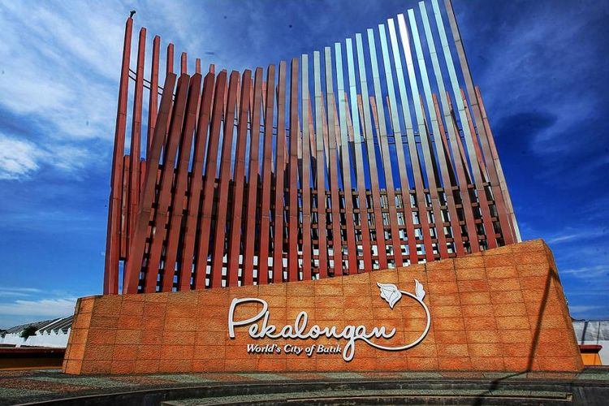
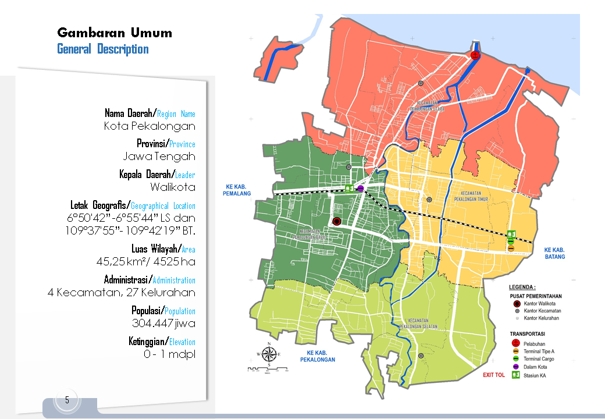
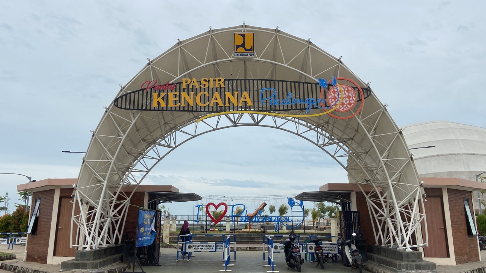
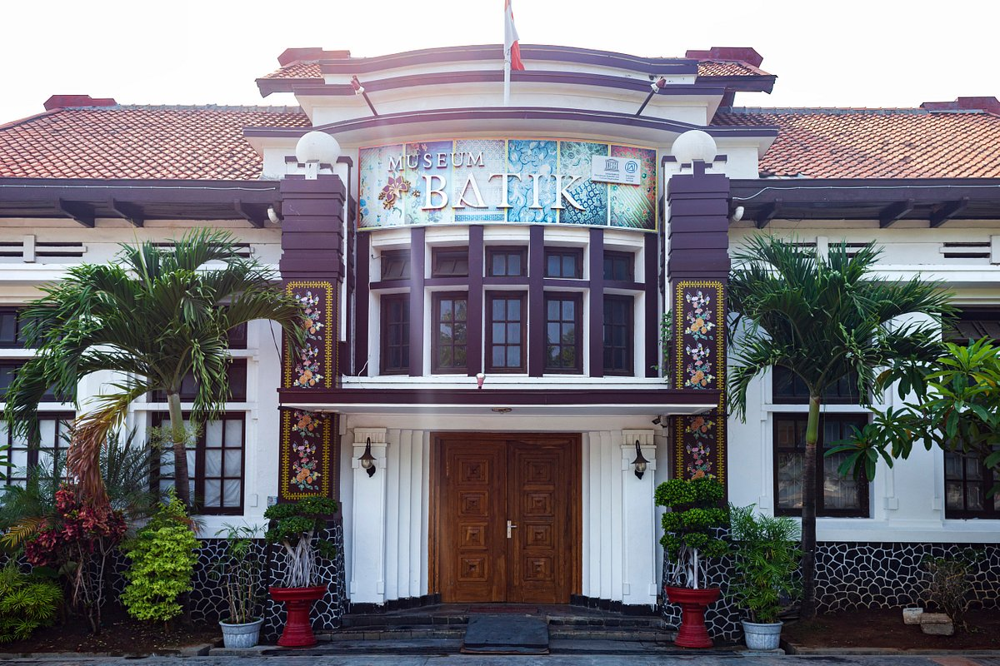

Sejarah

Kota Pekalongan adalah salah satu kota di pesisir pantai utara Provinsi Jawa Tengah. Kota ini
berbatasan dengan laut jawa di utara, Kabupaten Pekalongan di sebelah selatan dan barat dan
Kabupaten Batang di timur. Kota Pekalongan terdiri atas 4 kecamatan, yakni Pekalongan Utara,
Pekalongan Barat, Pekalongan Selatan dan Pekalongan Timur. Kota Pekalongan terletak di jalur pantai
Utara Jawa yang menghubungkan Jakarta-Semarang-Surabaya. Kota Pekalongan berjarak 384 km di timur
Jakarta dan 101 km sebelah barat Semarang. Kota Pekalongan mendapat julukan kota batik. Hal ini
tidak terlepas dari sejarah bahwa sejak puluhan dan ratusan tahun lampau hingga sekarang, sebagian
besar proses produksi batik Pekalongan dikerjakan di rumah-rumah. Akibatnya batik Pekalongan menyatu
erat dengan kehidupan masyarakat Pekalongan. Batik telah menjadi nafas penghidupan masyarakat
Pekalongan dan terbukti tetap dapat eksis dan tidak menyerah pada perkembangan jaman, sekaligus
menunjukkan keuletan dan keluwesan masyarakatnya untuk mengadopsi pemikiran-pemikiran baru.
Meskipun tidak ada catatan resmi kapan batik mulai dikenal di Pekalongan, namun menurut perkiraan
batik sudah ada di Pekalongan sekitar tahun 1800. Bahkan menurut data yang tercatat di Deperindag,
motif batik itu ada yang dibuat 1802, seperti motif pohon kecil berupa bahan baju.
Perkembangan yang signifikan diperkirakan terjadi setelah perang Diponegoro atau perang Jawa pada
tahun 1825-1830. Terjadinya peperangan ini mendesak keluarga kraton Mataram serta para pengikutnya
banyak yang meninggalkan daerah kerajaan terbesar ke Timur dan Barat. Di daerah-daerah baru itu
mereka kemudian menggembangkan batik. Ke arah timur berkembang dan mempengaruhi batik yang ada di
Mojokerto, Tulunggagung, hingga menyebar ke Gresik, Surabaya, dan Madura. Sedangkan ke barat
berkembang di banyumas, Kebumen, Tegal, Cirebon dan Pekalongan. Dengan adanya migrasi ini, maka
batik Pekalongan yang telah berkembang sebelumnya semakin berkembang, Terutama di sekitar daerah
pantai sehingga Pekalongan kota, Buaran, Pekajangan, dan Wonopringgo.
Perjumpaan masyarakat Pekalongan dengan berbagai bangsa seperti Cina, Belanda, Arab, India, Melayu
dan Jepang pada zaman lampau telah mewarnai dinamika pada motif dan tata warna seni batik. Sehingga
tumbuh beberapa jenis motif batik hasil pengaruh budaya dari berbagai bangsa tersebut yang kemudian
sebagai motif khas dan menjadi identitas batik Pekalongan. Motif Jlamprang diilhami dari Negeri
India dan Arab. Motif Encim dan Klenengan, dipengaruhi oleh peranakan Cina. Motif Pagi-Sore
dipengaruhi oleh orang Belanda, dan motif Hokokai tumbuh pesat pada masa pendudukan Jepang.
Kota Pekalongan memiliki pelabuhan perikanan terbesar di Pulau Jawa. Pelabuhan ini sering menjadi
transit dan area pelelangan hasil tangkapan laut oleh para nelayan dari berbagai daerah. Selain itu
Kota Pekalongan banyak terdapat perusahaan pengolahan hasil laut,seperti ikan asin, ikan asap,
tepung ikan, terasi, sarden, dan kerupuk ikan, baik perusahaan bersekala besar maupun industri rumah
tangga.
Kota Pekalongan terkenal dengan nuansa religiusnya, karena mayoritas penduduknya memeluk agama
Islam. Ada beberapa adat tradisi di Pekalongan yang tidak dijumpai di daerah lain semisal; syawalan,
sedekah bumi, dan sebagainya. Syawalan adalah perayaan tujuh hari setelah Idul Fitri dan
disemarakkan dengan pemotongan lopis raksasa untuk kemudian dibagi-bagikan kepada para pengunjung.
Nama Pekalongan sampai saat ini belum jelas asal-usulnya, belum ada prasasti atau dokumen lainnya
yang bisa dipertanggungjawabkan, yang ada hanya berupa cerita rakyat atau legenda. Dokumen tertua
yang menyebut nama Pekalongan adalah Keputusan Pemerintah Hindia Belanda (Gouvernements Besluit)
Nomer 40 tahun 1931:nama Pekalongan diambil dari kata ‘Halong‘ (dapat banyak) dan dibawah simbul
kota tertulis ‘Pek-Alongan‘.
Kemudian berdasarkan keputusan DPRD Kota Besar Pekalongan tanggal 29 januari 1957 dan Tambahan
Lembaran daerah Swatantra Tingkat I Jawa Tengah tanggal 15 Desember 1958, Serta persetujuan
Pepekupeda Teritorium 4 dengan SK Nomer KTPS-PPD/00351/II/1958:nama Pekalongan berasal dari kata
‘A-Pek-Halong-An‘ yang berarti pengangsalan (Pendapatan).
Pada masa VOC (abad XVII) dan pemerintahan Kolonial Hindia Belanda, sistem Pemerintahan oleh orang
pribumi tetap dipertahankan. Dalam hal ini Belanda menentukan kebijakan dan prioritas, sedangkan
penguasa pribumi ini oleh VOC diberi gelar Regant (Bupati). Pda masa ini, Jawa Tengah dan jawa Timur
dibagi menjadi 36 kabupaten Dengan sistem Pemerintahan Sentralistis
Pada abad XIX dilakukan pembaharuan pemerintahan dengan dikeluarkannya Undang-Undang tahun 1954 yang
membagi Jawa menjadi beberapa Gewest/Residensi. Setiap Gewest mencakup beberapa afdelling (setingkat
kabupaten) yang dipimpin oleh asisten Residen, Distrik (Kawadenan) yang dipimpin oleh Controleur,
dan Onderdistrict (Setinkat kecamatan) yang dipimpin Aspiran Controleur.
Geografis

Kota Pekalongan merupakan salah satu kota di wilayah Provinsi Jawa Tengah (terdapat 35
kabupaten/kota di wilayah Provinsi Jawa Tengah, terdiri dari 6 kota dan 29 kabupaten). Luas wilayah
Kota Pekalongan adalah sebesar 0,14% dari luas wilayah Provinsi Jawa Tengah. Kota Pekalongan
merupakan kawasan pesisir Utara Pulau Jawa dan merupakan salah satu simpul strategis jalur pantai
Utara Pulau Jawa karena Kota Pekalongan terletak di pertengahan antara Jakarta dan Kota Surabaya.
Jarak Kota Pekalongan ke Jakarta adalah 384 Km dan jarak Kota Pekalongan ke Kota Surabaya adalah 409
Km. Kota Pekalongan dapat dicapai melalui transportasi darat jalan raya serta jalur kereta api.
Aksesibilitas Kota Pekalongan semakin meningkat dengan telah terbangunnya jalur rel ganda kereta api
dan diharapkan akan terus meningkat dengan rencana pembangunan jalan tol lintas Pulau Jawa.
Secara historis-morfologis, Kota Pekalongan yang berbentuk linier dengan kecenderungan ke arah Barat
dan Timur menandakan kuatnya jalur transportasi regional pantai Utara Pulau Jawa. Dalam
perkembangannya bentuk linier kota juga berkembang ke arah Selatan, yang menunjukkan keterkaitan
erat Kota Pekalongan dengan kawasan sekitarnya, terutama dengan Kabupaten Pekalongan. Kondisi ini
tentunya menjadi keunggulan dan daya tarik yang bersifat geografis alami.
Wisata
Pantai Pasir Kencana Pekalongan

Obyek Wisata Pantai Pasir Kencana adalah Obyek Wisata berbasis pantai yang dikelola oleh Pemerintah Kota Pekalongan. Terletak didekat dengan Tempat Pelelangan Ikan atau Pelabuhan Perikanan Nusantara di Pantai Utara Jawa Tengah, jarak tempuh 4,5 Km dari pusat kota / stasiun besar kereta api, luas lahan di pantai ini adalah 1,5 Ha. Dulunya nama tempat ini adalah Pantai Pasir Kencana, namun sejak direhab total dan dibuka untuk pengunjung, kini namanya sedikit mengalami perubahan dan dikenal menjadi Taman Wisata Pantai Pasir Kencana. Dengan selesainya dipermak oleh PUPR, membuat spot wisata di kota batik ini menjadi primadona baru bagi mereka bukan hanya warga Kota Pekalongan, namun juga daerah sekitar seperti Pemalang, Batang serta Kabupaten Pekalongan.
Di Taman Wisata Pasir Kencana beberapa wahana dan fasilitas penunjang sudah dibangun antara lain panggung hiburan, musala, panggung budaya, tempat bermain pasir, kolam renang, dan jogging track. Salah satu obyek wisata yang disukai pengunjung adalah jogging track karena bisa menikmati susana yang apik. Sementara jika kelelahan, pengunjung bisa mampir kafe atau kios kuliner lainnya.
Museum Batik Kota Pekalongan

Museum Batik Pekalongan diresmikan oleh Presiden Republik Indonesia ke-6 Susilo Bambang Yudhoyono pada tanggal 12 Juli 2006. Banhunan Museum ini mempunyai luas sekitar 2500 m2menempati lahan seluas 3675 m2. Bangunan yang ditempati adalah bangunan peninggalan Belanda yang telah berdiri sejak tahun 1906 yang pada awalnya berfungsi sebagai kantor administrasi keuangan pabrik gula yang berada di sekitar area karisidenan Pekalongan. Pada perkembangannya, gedung ini mengalami beberapakali perubahan fungsi sebagai Balai Kota, Kantor Walikota, hingga komplek perkantoran Pemerintah Kota. Museum Batik Pekalongan menyimpan banyak koleksi batik tua hingga modern baik itu yang berasal dari daerah pesisiran, daerah pedalaman dan area Jawa lainnya, batik dari berbagai daerah di Nusantara seperti dari Sumatera, Kalimantan, hingga Papua, dan kain jenis teknik batik dari manca negara. Tidak hanya memamerkan koleksi batik, Museum Batik Pekalongan juga adalah pusat pelatihan membatik dan pusat pembelajaran batik. Pelajar maupun pengunjung umum dapat belajar membuat batik ataupun melakukan penelitian mengenai budaya batik. Museum Batik Pekalongan juga mempunyai program-program pelatihan membatik baik ke masyarakat secara langsung, ke berbagai sekolah, hingga ke berbagai institusi lainya. Berbagai kerjasama dengan berbagai pihak juga dilakukan guna pelestarian budaya batik. Semua hal itu dilakukan sesuai dengan komitmen Museum Batik Pekalongan untuk terus menjaga dan melestarikan budaya warisan nenek moyang yang bernilai adiluhung ini.